Source code text editor
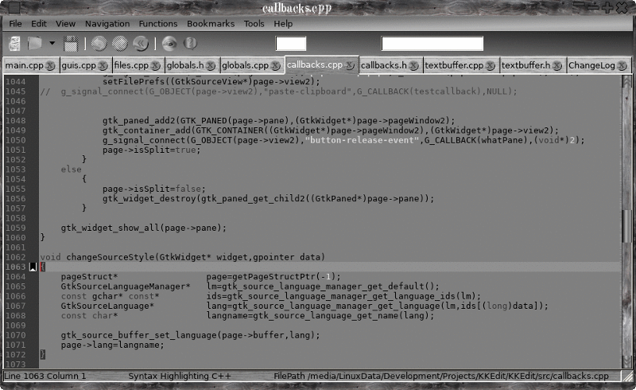
Why another text editor?
Simple, I didn't like any of the others they were all too flat ( sorry wrong sketch! ), anyway having used gedit for years it was getting increasingly difficult to keep it compiling without loads of gnome dependencies, looking around Linux text editors seem to be VERY simple (leafpad) stupidly complex (GVim,Bluefish), trying to be all things to all people.
One of the best text editors I have used is BBEdit but that is only available on the mac, so I bit the bullet and decided to write my own with the best bits from BBEdit ( the name KKEditQT is a tip of the hat to BBEdit ), gedit and leafpad. A simple uncluttered interface, no major dependencies, with just the features I use all the time, and TA DAH! KKEditQT.
What it's not!
KKEditQT is NOT a word processor or a web page editor, it is NOT and IDE! It won't right code for you, it wont insist on inserting brackets ( REALLY annoying! ), it wont force you to use any particular style, it doesn't need you to break all your fingers trying to hit weird and wonderful key combo's and it is not tied to one particular distro, oh yes and it won't cost you a penny!
What it is and does
KKEditQT is a deceptively simple text editor with syntax colouring.
It also has a function menu which allows you to jump instantly to a function definition, a navigation menu which will look in all open files for a function definition and then switch to that tab and go to the relevant line if it can't find a definition in any open files it will do a recursive search from the folder of the currently selected document, you can also highlight a #include directive and it will search for and try to open the file, include files surrounded by <> will be looked for in /usr/include, files surrounded by "" will be looked for in the current folder.
External tools can be added either globally or locally and when run can either replace the currently select text with their output, replace all the files text, be run in a terminal or you can choose to ignore the output form the script, BASH, python and perl can be used for the script language or any interpretor that uses '#' as a comment marker.
A number of simple demo scripts are included in the folder "demotoools" ( good name eh ).
You can drag and drop a file onto the main toolbar/menu to open a file.
Session can be saved and reloaded.
Any amount of bookmarks can be added anywhere, selecting a bookmark from the menu will switch to that tab and move to the appropriate line.
Just type a line number into the edit box on the toolbar to jump straight to that line.
Manual
Simple, I didn't like any of the others they were all too flat ( sorry wrong sketch! ), anyway having used gedit for years it was getting increasingly difficult to keep it compiling without loads of gnome dependencies, looking around Linux text editors seem to be VERY simple (leafpad) stupidly complex (GVim,Bluefish), trying to be all things to all people.
One of the best text editors I have used is BBEdit but that is only available on the mac, so I bit the bullet and decided to write my own with the best bits from BBEdit ( the name KKEditQT is a tip of the hat to BBEdit ), gedit and leafpad. A simple uncluttered interface, no major dependencies, with just the features I use all the time, and TA DAH! KKEditQT.
What it's not!
KKEditQT is NOT a word processor or a web page editor, it is NOT and IDE! It won't right code for you, it wont insist on inserting brackets ( REALLY annoying! ), it wont force you to use any particular style, it doesn't need you to break all your fingers trying to hit weird and wonderful key combo's and it is not tied to one particular distro, oh yes and it won't cost you a penny!
What it is and does
KKEditQT is a deceptively simple text editor with syntax colouring.
It also has a function menu which allows you to jump instantly to a function definition, a navigation menu which will look in all open files for a function definition and then switch to that tab and go to the relevant line if it can't find a definition in any open files it will do a recursive search from the folder of the currently selected document, you can also highlight a #include directive and it will search for and try to open the file, include files surrounded by <> will be looked for in /usr/include, files surrounded by "" will be looked for in the current folder.
External tools can be added either globally or locally and when run can either replace the currently select text with their output, replace all the files text, be run in a terminal or you can choose to ignore the output form the script, BASH, python and perl can be used for the script language or any interpretor that uses '#' as a comment marker.
A number of simple demo scripts are included in the folder "demotoools" ( good name eh ).
You can drag and drop a file onto the main toolbar/menu to open a file.
Session can be saved and reloaded.
Any amount of bookmarks can be added anywhere, selecting a bookmark from the menu will switch to that tab and move to the appropriate line.
Just type a line number into the edit box on the toolbar to jump straight to that line.
Manual
Navigation Menu
Functions Menu
Tools Menu
Preferences
Customize The Tool Bar
Other Features
Get It And Build It
Bug Reporting
Navigation Menu
The Navigation menu has five sub-menus - Go To Definition, Open Include File, Go To Line, Search For Define and Search In Gtk-Docs.
To go where a function etc is defined, select it and choose 'Go To Definition' KKEditQT will then look in open files for the definition and switch to that page and highlight the appropriate line like so:
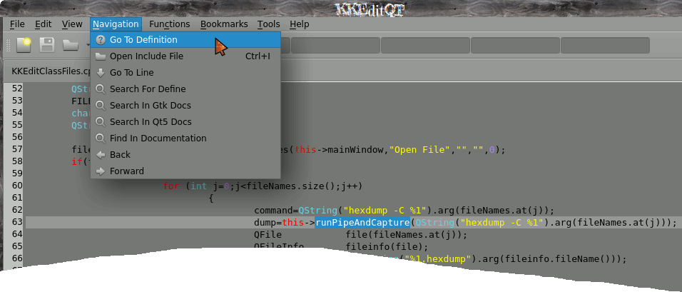
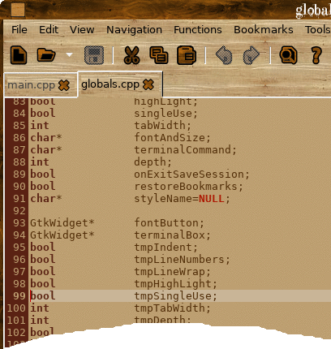
As you can see as the definition was not in an open file KKEditQT looks for the definition recursively starting from the folder where the file was opened from and if found opening the file and selecting the line with the definition.
The search depth for finding a definition is set in the prefs and defaults to 1 i.e. only looks for definitions in files in the same folder as any open documents, be careful about setting this too high as it can cause an unwanted delay when right clicking if it has to look in a lot of sub-folders.
You can also open an include file just highlight the line and select Open Include File like so:
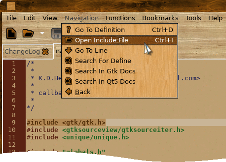
Include files are looked for in either /usr/include or the directory the current document is in, depending whether the file name is surrounded by '<>' or ' "" '.
Search for Define will open an entry box and allow you to type in a definition or part of a definition and will try to find it in the usual places opening a file if necessary, the search is case insensitive.
Functions Menu
The Functions menu contains a list of all defined functions, variables and defines that are visible in this file, to jump to the appropriate function definition just select it from the menu like so:
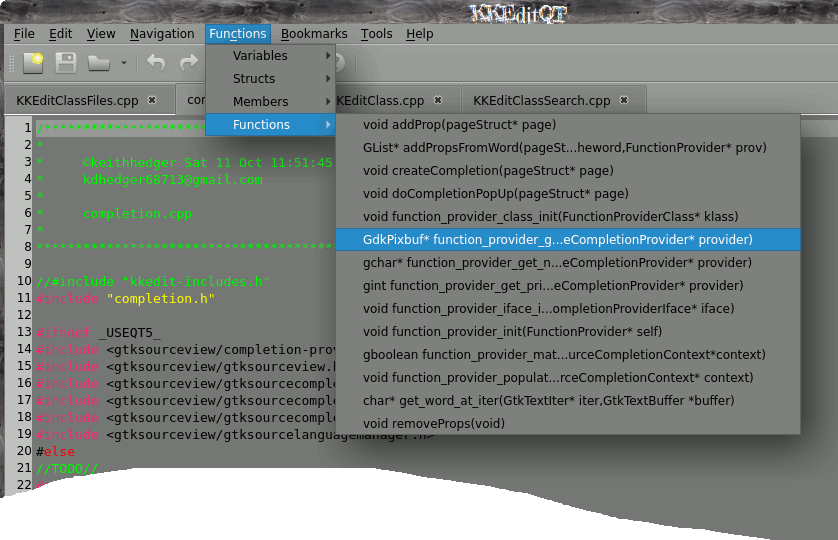
The Functions menu will be updated after saving a file or switching tabs.
You can select how the functions menu is displayed/sorted from the preferences.
Tools Menu
The Tools menu allow you to run an external script i.e. to open a terminal with the working directory set to the folder where the current file is open:
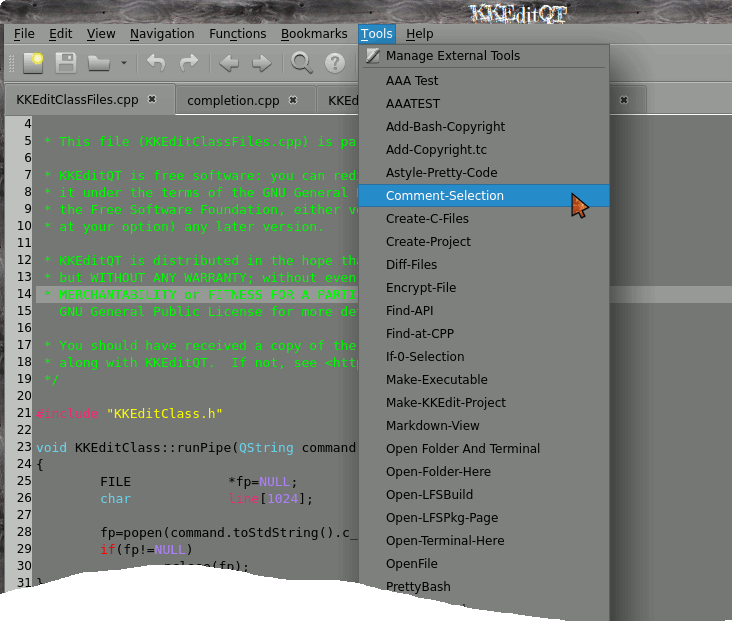
External tools can either be added globally to /usr/share/KKEditQT/tools (if you have installed with --prefix=/usr) or locally in ~/.KKEditQT/tools.
External tools are passed four environment variables:
KKEDIT_CURRENTFILE - Path to current document.
KKEDIT_CURRENTDIR - Directory of current document.
KKEDIT_SELECTION - Currently selected text.
KKEDIT_DATADIR - Directory of global folder ( e.g. /usr/share/KKEditQT ).
KKEDIT_HTMLFILE- Temporary file for displaying html in doc viewer
More variables may be defined later.
External tools are sorted by name in the menu and edit tools dialog.
External tools can be created by hand or via the 'Tools->New' menu like so:
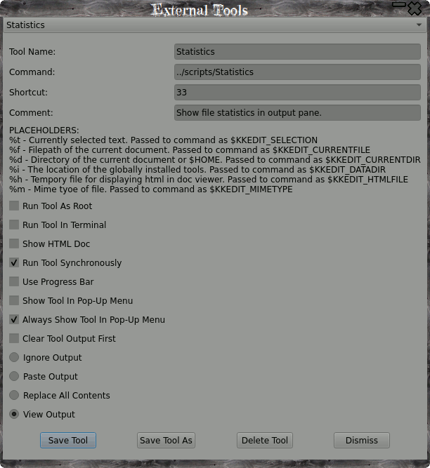
The place holders are:
%t - Currently selected text, the same as the $KKEDIT_SELECTION environment variable passed to the command .
%f - Filepath of the current document, the same as the $KKEDIT_CURRENTFILE environment variable passed to the command.
%d - Directory of the current document or ${HOME}, the same as the $KKEDIT_CURRENTDIR environment variable passed to the command.
%i -The location of the globally installed tools, the same as the $KKEDIT_DATADIR environment variable passed to the command .
%h - Temporary file for displaying html in doc viewer, the same as the $KKEDIT_HTMLFILE environment variable passed to the command .
Selecting 'View Output' will send the output of the tool to a pane in at the bottom of the editor, you can alter the size by dragging the handle and hide/show the pane from the 'View' menu, only stdout is captured from the output of the tool if you want to capture stderr you must redirect it to stdout, you can not capture stdin, if you need to interact with the tool use the ' Run Tool In Terminal' option.
You can also optionally set a keyboard shortcut, just click in the shortcut box, hold CONTROL and press another key with or without SHIFT, to delete the shortcut just press the 'Delete' key.
When using a tool that runs a command as root and a GUI root privileges program has NOT been set the tool is automatically run in a terminal.
Selecting 'Show HTML Doc' will display the file $KKEDIT_HTMLFILE in either the Gtk Doc viewer or your default browser, this is used in the installed example tool 'Open Man Page' to display the manpage of the selection ( if it exists and if you have man2html installed, most people do ).
Only tools that have "Show Tool In Pop-Up Menu" selected will show up in the pop-up menu if you have also selected some text.
Tools that have the "Always show In Popup" selected will show in the popup menu regardless of whether any text is or is not selected.
Commands can be 'compound' commands i.e. 'cat /tmp/textfile|head' but using pipes to a terminal may not always give what you want i.e. 'xterm -hold -e 'cat "/tmp/textfile"|tail -f'' WILL work and show the tail of the file but WILL NOT follow properly this is a feature/problem of xterm and beyond my control :(
For very complex commands create a script and set 'command' to the file path of your script, file paths can be absolute OR relative ( see the example scripts ).
Tools can be edited by selecting from the drop down list, if you attempt to edit a globally installed tool ( i.e.i.e. one in /usr/share/KKEditQT/tools ) you must have root privileges.

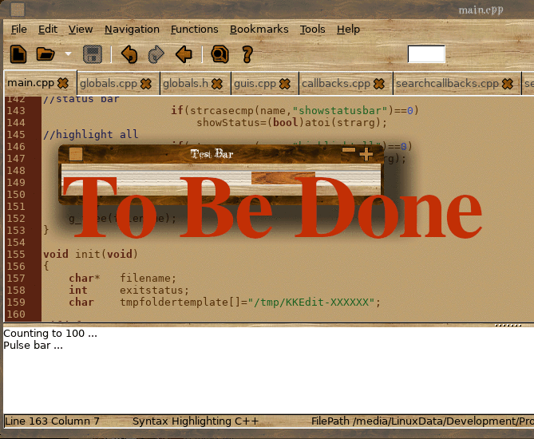
Preferences
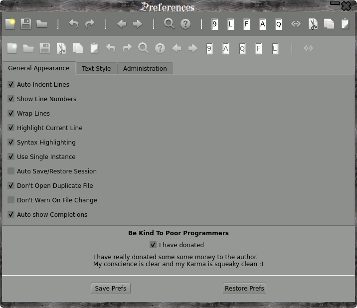
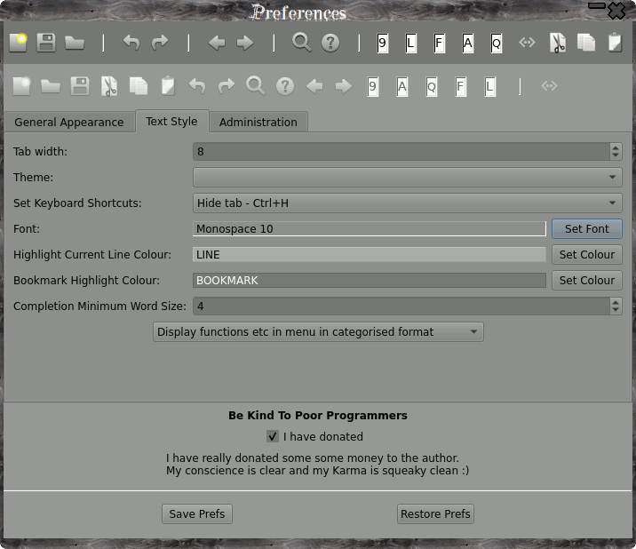
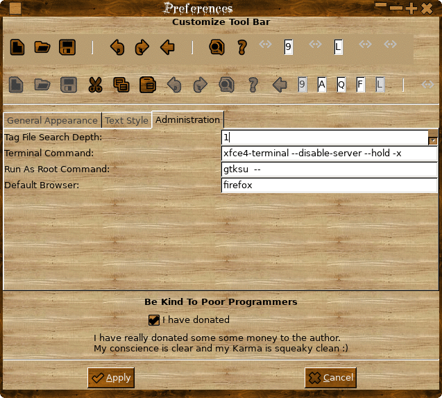
The Prefs file is created ~/.config/KDHedger/KKEditQT.conf and will be created/recreated when quitting KKEditQT.
Preferences should be set from 'Edit->Preferences'
You can set the command to run an external tool in a terminal from here.
Selecting 'Don't Open Duplicate File' will switch to the tab of that file rather than opening another copy.
Selecting 'Don't Warn On File Change' will suppress the waning dialog when an open file is changed on disk ( by another app ), the tab will still be updated.
The 'Run as Root Command' allows you to set your favorite graphical root privileges program, if this is blank a terminal will be used to ask for admin passwords ( See here ), the 'Terminal command' will be used to open a terminal, if this is blank then the default 'xterm -e' will be used.
You can also set the highlight colour of bookmarked lines.
You can also customize the keyboard shortcuts from here, just select from the drop down to get a dialog box like so:
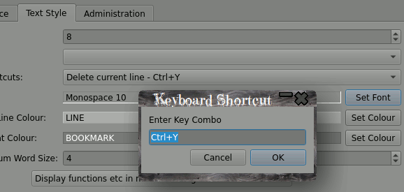
Shortcuts MUST use CONTROL.
Repeat the above untill you have set all the shortcuts you want and click 'Apply' to keep the changes or 'Cancel' to guess what?
You can also choose to open a file normally or by first reading the link ( if it's a symlink ), this means that filepath will either be the path to the link OR the path to the real file, this is handy when using the 'Open' option from the tab menu as you will either select files to open from the folder the link is in or the folder were the real file is, try it and see it's a lot less complicated than it sounds!
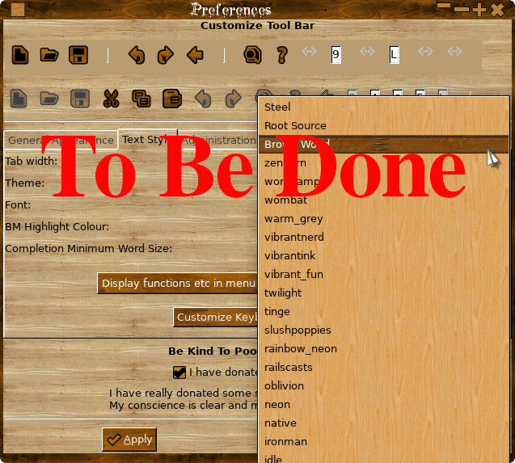
Customize The Tool Bar
You can customize what appears on the tool bar by simply clicking on a button to add it to the menu like so:
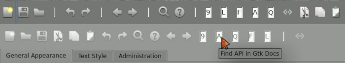
And then drag it to where you want it to appear on the toolbar like so:
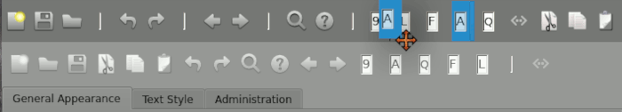
To remove an item from the toolbar just hold 'CONTROL' and click on item to be removed.
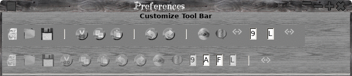
Some items can only be added once 'Save', 'Open' etc when they have been added they will be greyed out and can't be added again, removing them makes them available again, the separator and the expander can be used multiple times.
You can also choose to hide/show the toolbar from the 'View' menu.
Other Features
Copy filename from tab menu.
Copy filepath from tab menu.
Spell check document from tab menu.
Copy function define.
Go to function definition.
Toggle bookmark.
Single or multiple instance app.
Open as hexdump.
Find API definition in Gtk Doc's.
Other
Right clicking on a tab allows copying of the document file name, file path, spell check the document, set the source highlighting and quickly open other files in the same directory as the current document ( handy for quickly opening header files ).
Lock/Unlock Contents disables/enables editing.
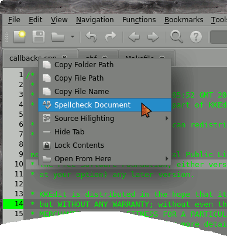
The document context menu also contains the 'Go To Definition' function for convenience.
Selecting the definition will copy it to the clipboard.
If there is no valid definition selected the menu item will not be shown.
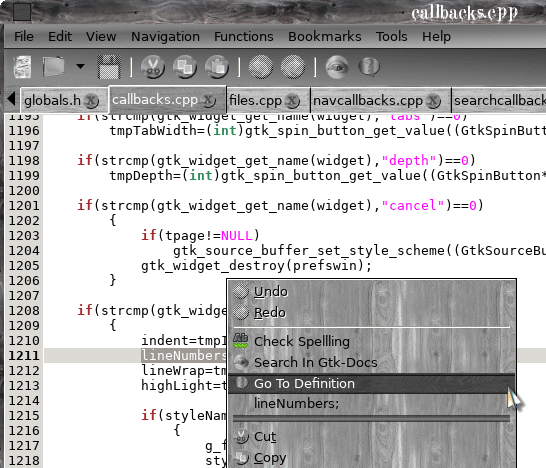
The right click context menu:
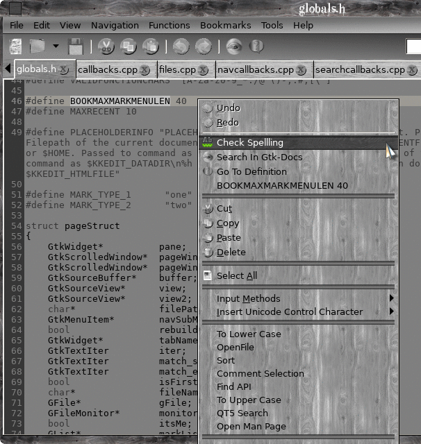
Spell checker dialog
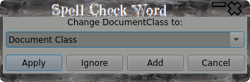
Bookmarks
Any amount of bookmarks can be added, selecting one will switch to that document and line.
Bookmarks are stored with the 'Save Session' and can be restored with the 'Restore Session With Bookmarks' menu.
Bookmarks are now toggled so if you place the cursor on a line with a bookmark it will add it if it's not already bookmarked or remove the bookmark if it is, you can use the 'Toggle Bookmark' menu from the main menu or the main context menu, you can also just click in the bookmarks bar to toggle a mark on or off ( you will see a little bookmark icon ).
You can also remove all bookmarks from all open documents by selecting 'Remove All Bookmarks' from the menu.
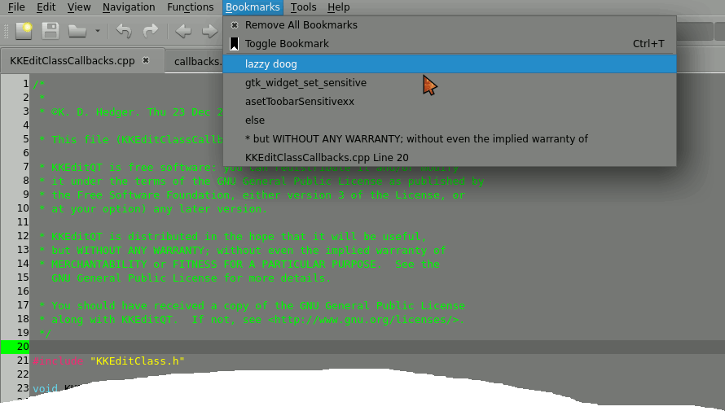
You can open a file as a hex dump ( this is NOT a hex editor though that may change later ) like so:
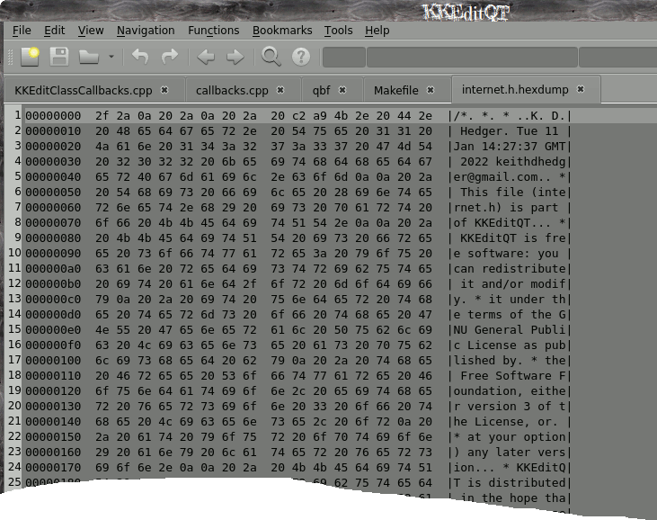
Look up Gtk API
You can look up an API declaration from any installed gtk-doc's installed by selecting all or part of an API name like so:
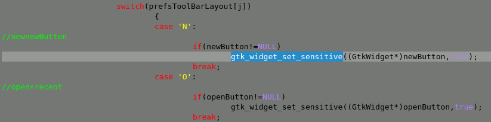
And then selecting 'Search In Gtk-Docs' form the Navigation menu or from the right click pop-up menu like so:
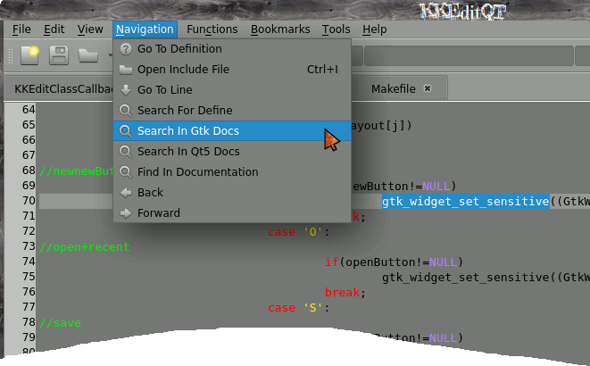
And if you have built with the --enable-docviewer option to configure ( the default ) you will get a window pop-up with a list of possible links to the API you want, if there is only one possible link you will go straight to that.
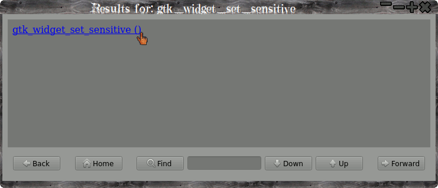
Click the Link:
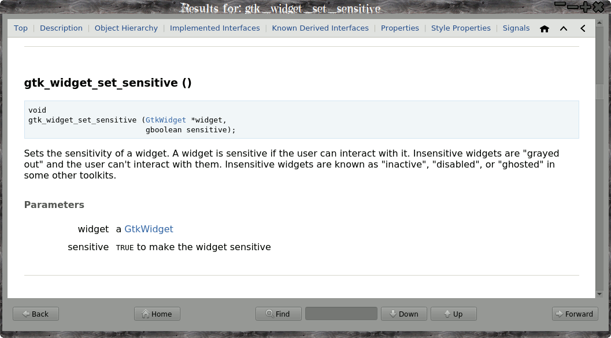
Links can be clicked and followed in the Gtk doc viewer, and functions etc can be copied and pasted into your document.
If you had selected all of the 'gtk_button_get_use_stock ' API name you would have gone straight to the screen shown.
You can also manually enter a search term in the box and press 'enter' or click 'find'.
You can search within the displayed page by entering a search term in the box and clicking 'Down' to search forward and 'Up' to search back..
You can also search the QT5 class docs like so:

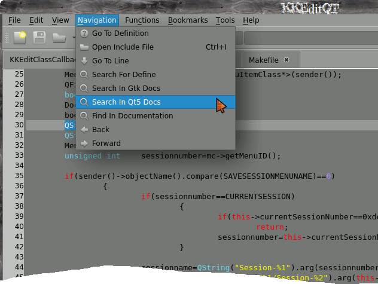
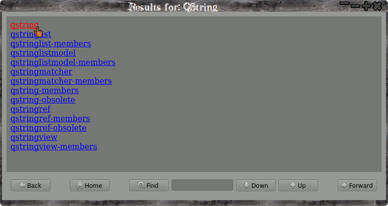
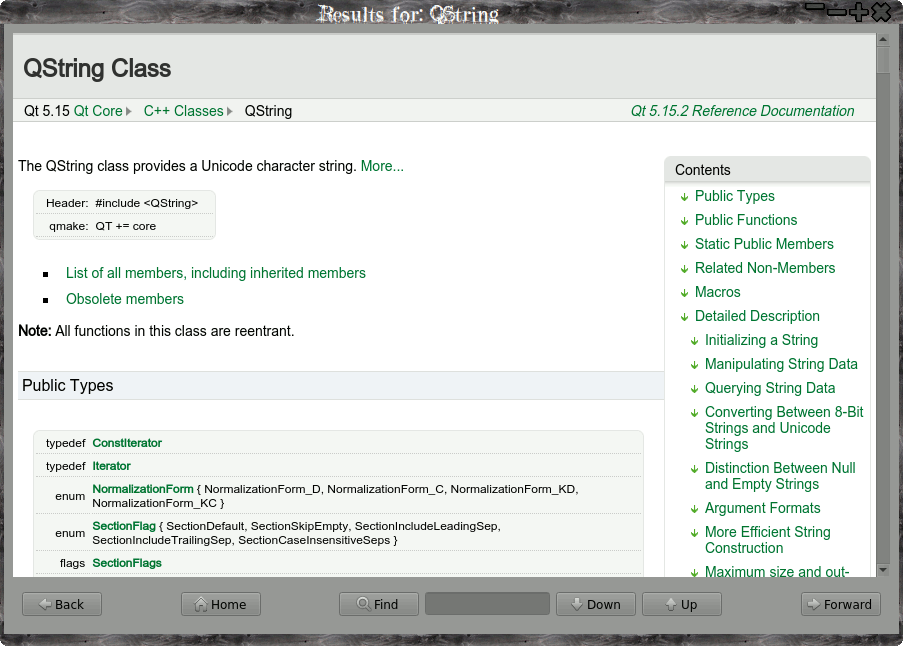
Other Features include:
Can be set to automatically save and restore a session ( with or without bookmarks ) when starting and exiting.
You can manually save and restore sessions via the 'File' menu, you can also restore a session with or without the saved bookmarks ( bookmarks are saved automatically with the session ), if you change a file on disk without re-saving the session you may find that some bookmarks are skewed.
You can run KKEditQT either as a single instance app or as a multiple instance app , set via the prefs menu. Single instances are unique to each workspace.
You can also open a new instance of KKEditQT from the file menu regardless of the prefs settings.
Using Root
You can also open a new instance of KKEditQT with admin privileges from the file menu, You can set a GUI to gain root privileges in the prefs window, I would recommend, GtkSu ( Available here ), use 'gtksu --', ubuntu users may have to use 'gtksu -- sudo' to stop gtk3 complaining, other options ( depending on your system and what you have installed are: 'gksu --', 'sudo -A' and so on,if no GUI to get root privileges is installed a terminal will be used depending on your preferences settings.
!!WARNING!!
Editing files with admin privileges can seriously damage your system if used incorrectly.
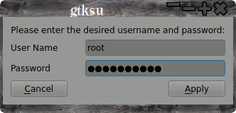
Find/Replace
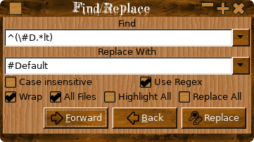
The 'Wrap' option to find/replace is ignored when searching in all open files.
You can jump to a line using the toolbar entry:
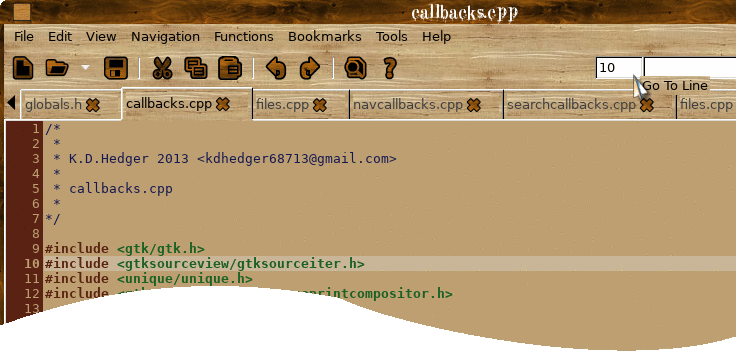
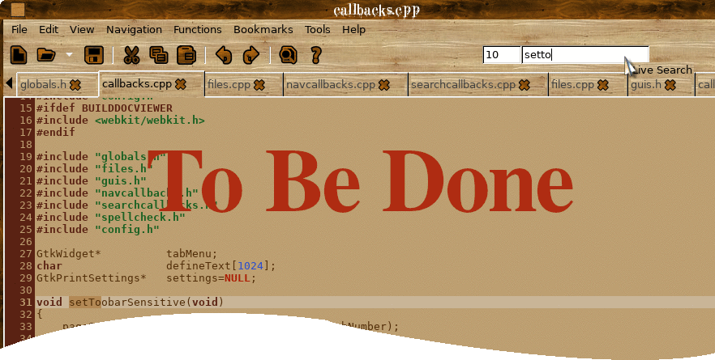
The current source syntax colouring is now selectable via the 'tab' context menu like so:
Be aware that the default highlighting for a file is set by the mime-type system and so may change after saving/loading. mime-types for a file can not usually be set manually but depends on system auto magic stuff, file suffix etc.
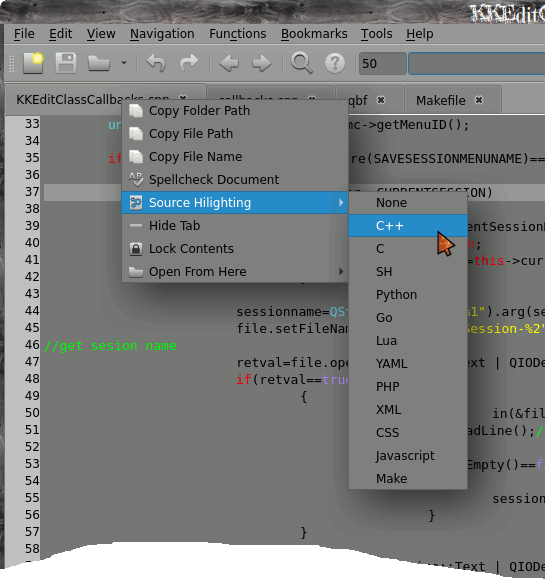
You can also turn on/off various bits and peices from the 'View' menu:
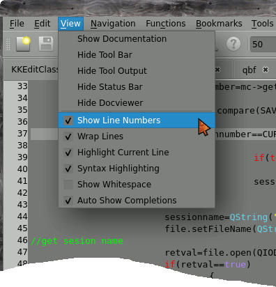
Code Completion
TBD
Create Documentation with Doxygen
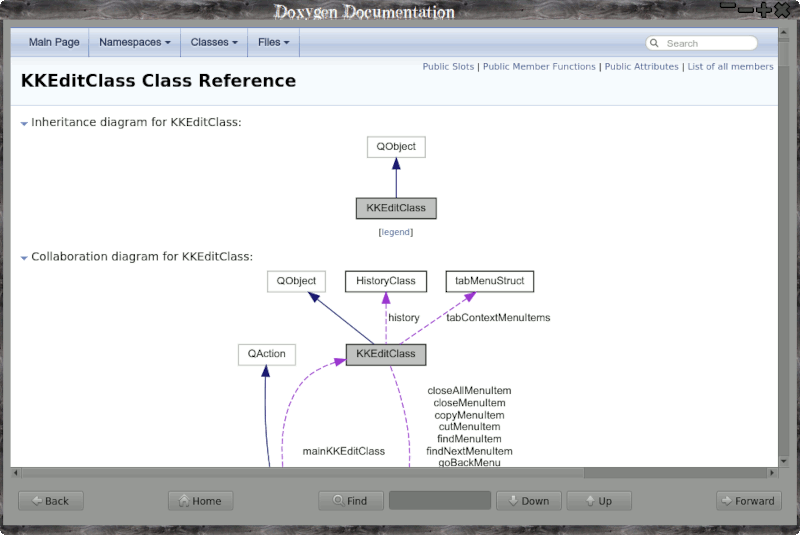
You can create documentation for your code if you have doxygen installed by selecting "Create Documentation" from the 'File' menu, the documentation will be created in the current folder and displayed with either the built in docviewer or the system browser, the first time you run this there may be a small delay while the initial files are created by doxygen, after that selecting "Create Documentation" again just updates the files, if there is not a file a called 'Doxyfile' in the current folder a default config file is created for you, this file can manually edited to suit your needs, I would recommend that you also install Graphviz for the nice fancy flow charts, most distros will have packages for these two apps.
If doxygen is NOT installed you won't have a "Create Documentation" menu, just install it and ( optionally ) Graphviz and restart KKEditQT and the menu will appear.
Document Integration
To Be Done
Click on the 'Files' tab to get a list of files, then SHIFT click on a file name like so:
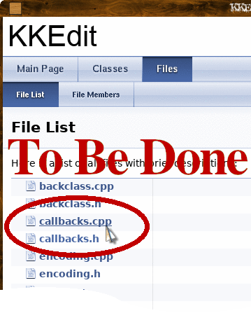
Clicking a reference ( GREEN ) will go to the documentaion for that refence where you can again select a line number/file etc.
You can also click on the various graph box's to go to a function definition.
You can open a file by SHIFT clicking on a box in the include dependency graph for a file like so:
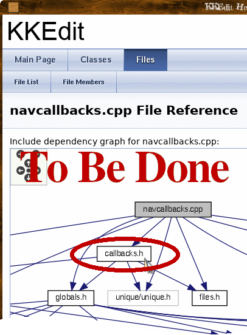
This will open the file or switch to the relevant tab as above.
You can tweak the default doxyfile to add more/less info to the browser.
The main change you will want to make to the file 'Doxyfile' is to change the project name so open then file 'doxyfile' which will be in the same folder as your source code and change the line "PROJECT_NAME="My Project"" to somthing more appropriate.
At the moment the documentation MUST be left in the html folder created in the folder with your source code, this will probably cjange later to allow you to set the folder for the documentation.
If you want more information on the various options available in the doxyfile run 'doxygen -g' from the command line and a default Doxyfile will be created which is heavily commented.
Plugins
TBD
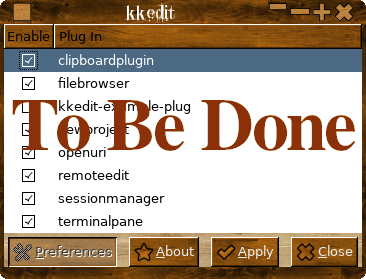
Get it here!
KKEditQT
Dependencies
A reasonably new Xorg and desktop.
QT5 >= 5.15.2
Qt5X11Extras >= 5.15.2
Qt5WebKitWidgets >= 5.4.0
ctags.
Autotools.
wget or curl.
aspell-0.60.6.8. (optional but recommended)
GtkSu (optional but recommended)
Manpage Editor (optional but recommended)
Qt5WebKitWidgets is is an optional dependency if you want to build the doc viewer disable by adding --disable-docviewer to ./configure or ./autogen.sh.
Spell checking via aspell is optional and can be enabled with the '--enable-aspell' switch to ./configure or ./autogen.sh.
The presence of "GtkSu" and "Manpage Editor" are detected at configure and if installed will be used, in the case of GtkSu this is used to get admin privileges when opening a root editor from the file menu, if Manpage Editor is detected a menu item is added to the file menu, both can be downloaded from this website.
If you use a source based distro like LFS or Slackware you should have all(most) of these installed, if you use a pre-packaged distro like debian and you have not compiled from source before you may have to install some development packages i.e.i.e. for debian ( this is from memory ) the build-essential package and the -dev packages for QT5 and
Qt5WebKitWidgets check your distros documentation and you distros forums for general help on compiling software.
Building
Unpack the tar ball,cd into the KKEditQT folder and run:
./autogen.sh --prefix=/usr --enable-aspell --enable-docviewer
make
sudo make install
PLEASE read the README file!
See the 'INSTALL' file for full details.
Reporting Bugs
Please send bug reports, feature suggestions, large bags of jewels etc to:
Mail me
I will get back to you as soon as I can.
Applications